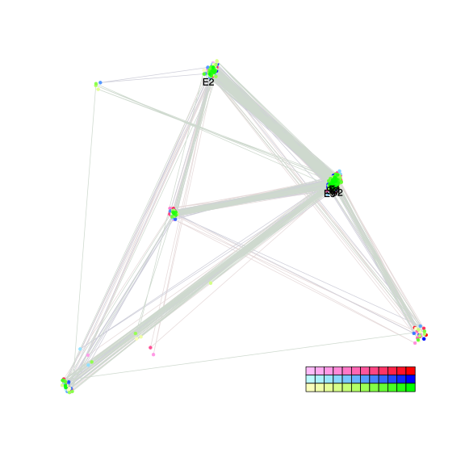

| chain # | burnin | subsample | Iterations (remaining) | command line | subdirectory | directory |
|---|---|---|---|---|---|---|
| 1 | 10000 | 1 | 90000 | bali-phy E7_AA_red3_PerissoArtio.fas -s 69832 -n PerissoArtio_c1 | PerissoArtio_c1-1 | /DATA/work/ONCOGENEVOL/database/trees/Bali-Phy/red3/E7 |
| 2 | 10000 | 1 | 90000 | bali-phy E7_AA_red3_PerissoArtio.fas -s 78632 -n PerissoArtio_c2 | PerissoArtio_c2-1 | /DATA/work/ONCOGENEVOL/database/trees/Bali-Phy/red3/E7 |
| 3 | 10000 | 1 | 90000 | bali-phy E7_AA_red3_PerissoArtio.fas -s 59403 -n PerissoArtio_c3 | PerissoArtio_c3-1 | /DATA/work/ONCOGENEVOL/database/trees/Bali-Phy/red3/E7 |
| P(data|M) = -1496.871 +- 0.224 | Complete sample: 15 topologies | 95% Bayesian credible interval: 4 topologies |
Phylogeny Distribution

| Partition support: Summary |
| Partition support graph: SVG |
{kind=link}
| 50% consensus | Newick (+PP) | SVG | |||||
| 66% consensus | Newick (+PP) | SVG | |||||
| 80% consensus | Newick (+PP) | SVG | |||||
| 90% consensus | Newick (+PP) | SVG | |||||
| 95% consensus | Newick (+PP) | SVG | |||||
| 99% consensus | Newick (+PP) | SVG | |||||
| 100% consensus | Newick (+PP) | SVG | |||||
| MAP | Newick (+PP) | SVG | |||||
| greedy | Newick (+PP) | SVG |
{kind=link}
{kind=link}
{kind=link}
{kind=link}
{kind=link}
{kind=link}
{kind=link}
{kind=link}
Alignment Distribution
Partition 1
| Diff | Min. %identity | # Sites | Constant | Informative | ||||
|---|---|---|---|---|---|---|---|---|
| Initial | FASTA | HTML | Diff | 1.65% | 125 | 1 (0.8%) | 41 (32.8%) | |
| Best (WPD) | FASTA | HTML | AU | 9.87% | 214 | 10 (4.67%) | 73 (34.1%) |
Mixing
{kind=link}
{kind=link}
| burnin (scalar) | ESS (scalar) | ESS (partition) | ASDSF | MSDSF | PSRF-CI80% | PSRF-RCF |
|---|---|---|---|---|---|---|
| 838 | 1.425e+04 | 21045.652 | 0.004 | 0.007 | 1.001 | 1.006 |
Projection of RF distances for the first 3 chains3D | Variation of split PPs across chains |
Scalar variables
| Statistic | Median | 95% BCI | ACT | ESS | burnin | PSRF-CI80% | PSRF-RCF |
|---|---|---|---|---|---|---|---|
| prior | -269 | (-333.1, -213.3) | 11.89 | 22713 | 176 | 1 | 0.9973 |
| prior_A1 | -247 | (-310.4, -193.1) | 9.373 | 28807 | 345 | 1 | 0.9986 |
| likelihood | -1472 | (-1497, -1447) | 10 | 26992 | 291 | 1 | 0.9974 |
| logp | -1742 | (-1797, -1694) | 11.97 | 22548 | 252 | 0.9999 | 0.9962 |
| Heat.beta | 1 | ||||||
| Scale1 | 3.594 | (1.531, 6.895) | 1.11 | 243244 | 126 | 0.9999 | 1.001 |
| S1.F.pi.A | 0.05433 | (0.03508, 0.07517) | 8.461 | 31911 | 181 | 1 | 1.002 |
| S1.F.pi.R | 0.07528 | (0.0519, 0.1021) | 8.471 | 31875 | 480 | 1 | 1.006 |
| S1.F.pi.N | 0.03238 | (0.0179, 0.04855) | 7.992 | 33785 | 203 | 0.9996 | 1.002 |
| S1.F.pi.D | 0.0576 | (0.03625, 0.08163) | 8.638 | 31256 | 406 | 0.9998 | 0.9952 |
| S1.F.pi.C | 0.03815 | (0.01993, 0.05911) | 8.408 | 32112 | 523 | 0.9999 | 1.006 |
| S1.F.pi.Q | 0.04301 | (0.02669, 0.0616) | 8.002 | 33742 | 439 | 0.9996 | 0.998 |
| S1.F.pi.E | 0.05193 | (0.03285, 0.07368) | 8.392 | 32175 | 348 | 0.9999 | 0.9999 |
| S1.F.pi.G | 0.07001 | (0.04438, 0.0982) | 9.339 | 28911 | 339 | 1 | 1.001 |
| S1.F.pi.H | 0.03123 | (0.0167, 0.04813) | 8.026 | 33638 | 235 | 1 | 1.001 |
| S1.F.pi.I | 0.0289 | (0.01546, 0.04444) | 8.219 | 32851 | 408 | 1 | 1.003 |
| S1.F.pi.L | 0.09525 | (0.06747, 0.1259) | 8.159 | 33092 | 491 | 1 | 0.998 |
| S1.F.pi.K | 0.04346 | (0.0253, 0.06346) | 10.35 | 26076 | 762 | 1 | 0.999 |
| S1.F.pi.M | 0.003009 | (9.482e-05, 0.008561) | 9.765 | 27649 | 695 | 1 | 0.9992 |
| S1.F.pi.F | 0.04422 | (0.02561, 0.065) | 8.09 | 33373 | 181 | 1 | 0.9957 |
| S1.F.pi.P | 0.0997 | (0.06998, 0.1322) | 8.835 | 30558 | 503 | 0.9999 | 0.9996 |
| S1.F.pi.S | 0.07934 | (0.05696, 0.1036) | 8.036 | 33600 | 612 | 1 | 0.997 |
| S1.F.pi.T | 0.06352 | (0.04311, 0.08601) | 7.71 | 35017 | 838 | 0.9999 | 0.9946 |
| S1.F.pi.W | 0.004584 | (0.0001108, 0.01321) | 10.11 | 26694 | 378 | 1.001 | 0.9968 |
| S1.F.pi.Y | 0.02338 | (0.009623, 0.04031) | 8.24 | 32767 | 419 | 1 | 1 |
| S1.F.pi.V | 0.04738 | (0.03011, 0.06776) | 8.163 | 33075 | 396 | 0.9999 | 1 |
| I1.RS07.meanIndelLengthMinus1 | 2.155 | (1.041, 3.741) | 10.83 | 24934 | 162 | 0.9999 | 1.003 |
| I1.RS07.logLambda | -3.176 | (-3.759, -2.617) | 6.372 | 42370 | 176 | 0.9998 | 0.9972 |
| |A1| | 164 | (144, 187) | 18.94 | 14252 | 242 | 0.9767 | 1.001 |
| #indels1 | 37 | (25, 48) | 9.367 | 28824 | 187 | 0.9333 | 0.9973 |
| |indels1| | 118 | (83, 163) | 10.73 | 25157 | 190 | 0.975 | 1.003 |
| #substs1 | 253 | (230, 271) | 11.59 | 23297 | 199 | 0.975 | 1.001 |
| Scale1*|T| | 4.49 | (3.686, 5.361) | 4.897 | 55137 | 136 | 1 | 1.002 |
| |A| | 164 | (144, 187) | 18.94 | 14252 | 242 | 0.9767 | 1.001 |
| #indels | 37 | (25, 48) | 9.367 | 28824 | 187 | 0.9333 | 0.9973 |
| |indels| | 118 | (83, 163) | 10.73 | 25157 | 190 | 0.975 | 1.003 |
| #substs | 253 | (230, 271) | 11.59 | 23297 | 199 | 0.975 | 1.001 |
| |T| | 1.252 | (0.516, 2.27) | 1 | 270003 | 111 | 0.9999 | 0.9996 |